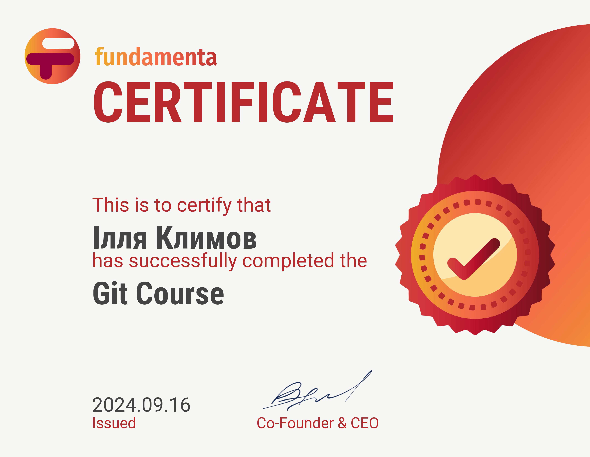

Що таке Git?
Git — це розподілена система контролю версій, яка дозволяє зберігати історію змін у коді, працювати з різними версіями проекту та полегшує співпрацю з командою.
Чому обирати Git?
Розподілене зберігання
Кожен користувач має повну копію проекту, що дозволяє працювати незалежно.
Офлайн-доступ
Ви можете працювати з проектом навіть без доступу до Інтернету.
Гнучке управління гілками
Git дозволяє легко створювати та зливати гілки, забезпечуючи зручність у керуванні функціями.
Основні команди Git
- git init - Створення нового Git-репозиторію.
- git clone [url] - Клонування існуючого репозиторію.
- git status - Перевірка поточного стану файлів.
- git add [файл] - Додавання файлу до індексації.
- git commit -m "[повідомлення]" - Фіксація змін з коментарем.
- git push - Відправлення змін на віддалений сервер.
- git pull - Оновлення локальної версії з віддаленого репозиторію.
- git branch - Перегляд та створення нових гілок.
- git checkout [назва гілки] - Перемикання між гілками.
- git merge [назва гілки] - Злиття гілок.
Отримайте Сертифікат
Після завершення курсу ви зможете отримати сертифікат, який підтверджує ваші знання з Git.
